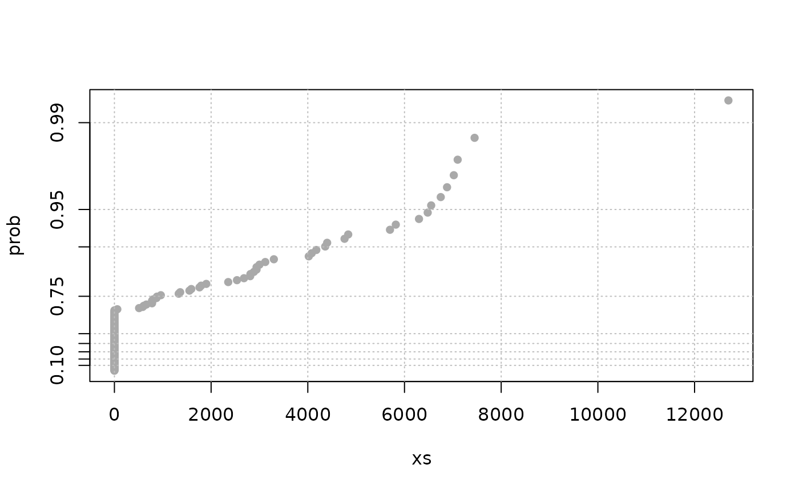
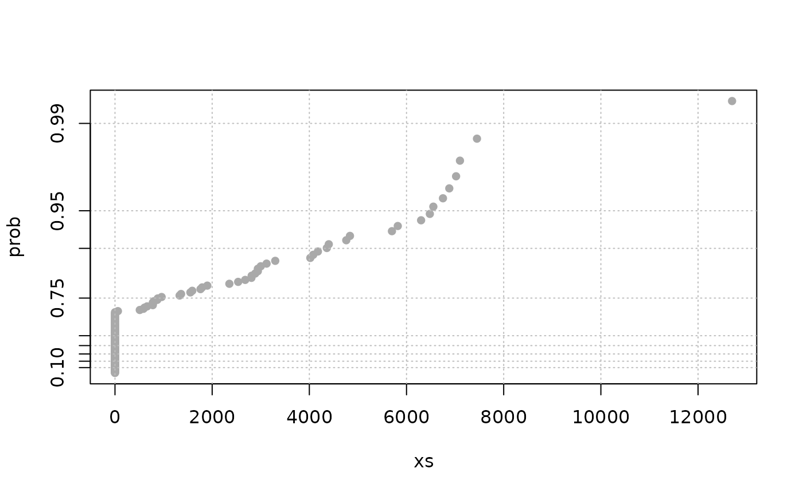

Methods computing spacings between Largest Order Statistics
spacings.RdMethods computing the random spacings for the Largest Order Statistics of the marks in a POT renewal.
Usage
spacings(object, ...)
# S3 method for class 'numeric'
spacings(object, wExp = TRUE, ...)
# S3 method for class 'data.frame'
spacings(object, varName, wExp = TRUE, ...)
# S3 method for class 'Rendata'
spacings(object, type = c("MAX", "OTS", "OT"), wExp = TRUE, ...)Arguments
- object
-
A object containing the marks \(X_i\). This is can be a vector or a data frame for data aggregated by blocks. For an object of class
data.frameone of the three data.frame slots:OTdata,MAXdataorOTSdatacan be used using the suitable value oftype. - varName
-
Character vector of length 1 giving the name of the variable when
objectis a data.frame. - wExp
-
Logical. If
TRUE, the spacings are weighted as explained in Details. - type
-
Character specifying the data.frame to be used when object has class
"Rendata". - ...
-
Not used yet.
Details
The spacings are the differences between the Largest Order Statistics. They are useful for some estimation tasks or diagnostics. Given random variables \(X_i\), the \(i\)-th spacing \(Y_i\) is the difference \(X_{(i)}-X_{(i+1)}\) between the \(i\)-th largest order statistic \(X_{(i)}\) and the next in the decreasing order i.e. \(X_{(i+1)}\).
When the r.vs \(X_i\) form a sample of an exponential or Gumbel distribution, the spacings associated with the largest order statistics are or tend to be independent and exponentially distributed. More precisely, the weighted spacings \(i \times Y_i\) have or tend to have the same exponential distribution. This can be used to estimate the shape parameter of the underlying distribution using only the largest order statistics. Moreover the \(r-1\) spacings \(Y_i\) built from the \(r\) largest order statistics \(i \le r\) are or tend to be independent from the \(r\)-th largest order statistic \(X_{(r)}\).
When wExp is TRUE, the returned values are the weighted
spacings \(i \times Y_i\).
Value
A list or vector containing the spacings. When the data is structured
in blocks as is the MAXdata slot of an object of class
"Rendata", the spacings are computed form the order statistics
within each block, to maintain independence with the next order
statistic in decreasing order.
References
Embrechts P., Klüppelberg C. and Mikosch T. (1997) Modelling Extremal Events for Insurance and Finance. Springer.
Caution
By default, the spacings are scaled as explained above, thus assuming that the marks are exponentially distributed.
Examples
sp <- spacings(rgumbel(200, loc = 0, scale = 1))
expplot(sp)
sp1 <- spacings(rgev(200, loc = 0, scale = 1, shape = 0.3))
expplot(sp1)
 ## spacings are computed by block
sp2 <- spacings(object = Garonne$MAXdata,
varName = Garonne$info$varName)
expplot(unlist(sp2))
sp3 <- spacings(object = Garonne, type = "OT")
expplot(sp3)

## spacings are computed by block
sp2 <- spacings(object = Garonne$MAXdata,
varName = Garonne$info$varName)
expplot(unlist(sp2))
sp3 <- spacings(object = Garonne, type = "OT")
expplot(sp3)
